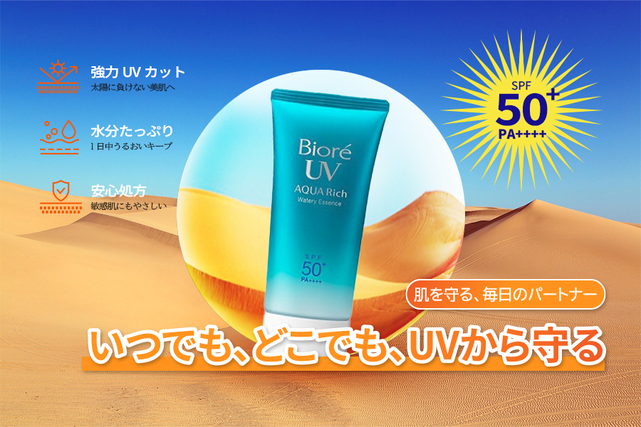
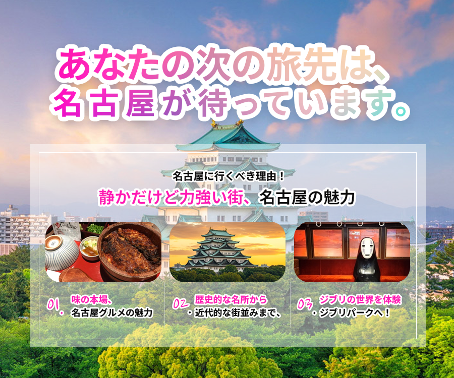

About
強い日差しの中でも肌を守る、“信頼できる”日焼け止めを表現しました
真夏の日本の暑さを「砂漠」に見立て、どんな過酷な環境でも肌を守ってくれる日焼け止めを表現しました。
製品の涼しさと水分感を青色で表現し、SPFの数値は太陽をモチーフに視覚的に強調しました。

About
名古屋の魅力を視覚的に強調し、旅への期待感を高めることを目的とした広告バナーです。
名古屋の「名物グルメ」「歴史的観光地」「ジブリパーク」など、さまざまな魅力を一枚のバナーに凝縮しました。
鮮やかなグラデーションの文字やアイキャッチ効果により、ユーザーの目を惹くようデザインしました。